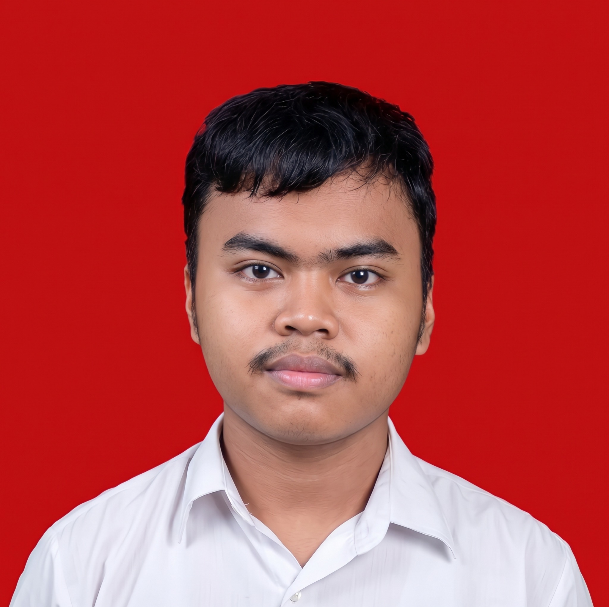

Teliti dalam proses
Memperhatikan detail, kerapian, dan instruksi dalam setiap tahapan pekerjaan.
Halo, senang bertemu dengan Anda.
Operator Produksi · Sablon Manual · Teknik Informatika
Pribadi yang teliti, bertanggung jawab, dan senang belajar. Memiliki pengalaman langsung dalam proses produksi apparel serta terus mengembangkan kemampuan melalui pendidikan dan pengalaman kerja.

Saya mahasiswa S1 Teknik Informatika Universitas Pamulang yang memiliki pengalaman di bidang produksi apparel, khususnya sablon manual.
Dalam pekerjaan, saya terbiasa menyiapkan bahan dan peralatan, mengikuti alur produksi, menjaga kerapian hasil, serta berkoordinasi dengan tim. Saya juga terbuka untuk mempelajari tugas dan lingkungan kerja baru, termasuk bidang di luar pengalaman utama saya.
Memperhatikan detail, kerapian, dan instruksi dalam setiap tahapan pekerjaan.
Memeriksa hasil kerja dan memastikan pekerjaan dilakukan dengan baik.
Siap belajar hal baru, menerima masukan, dan bekerja bersama tim.
Terlibat langsung dalam proses produksi, pemeriksaan hasil, dan penyelesaian pekerjaan bersama tim.
Abyad Apparel Pro · Apparel & Custom Printing
Bertanggung jawab membantu proses produksi sablon manual pada pakaian dengan memperhatikan desain, kerapian hasil, ketepatan proses, dan target waktu penyelesaian.
Menyiapkan bahan, pakaian, dan peralatan sebelum produksi.
Melakukan proses sablon manual sesuai desain dan instruksi.
Memeriksa kerapian dan kualitas hasil produksi.
Menjaga kebersihan serta kerapian area dan peralatan kerja.
Bekerja sama dengan tim untuk menyelesaikan pesanan tepat waktu.
Mengikuti prosedur dan menyesuaikan diri dengan kebutuhan produksi.
S1 Teknik Informatika
Pendidikan tinggiSekolah Menengah Atas
Sekolah Menengah Pertama
Sekolah Dasar
Keterampilan praktik, kebiasaan kerja, dan pengetahuan pendukung yang terus saya kembangkan.
Memahami kegiatan dasar produksi dan kebutuhan kerja di lapangan.
Berusaha menjaga alur kerja, komunikasi, dan tanggung jawab.
Dasar pengetahuan teknologi yang diperoleh melalui studi Teknik Informatika.
Saya terbuka untuk kesempatan kerja, kolaborasi, dan pengalaman baru. Hubungi saya melalui kontak berikut.